User Guide
Smart AutoSorter AI Pro organizes a folder of documents into a generated folder tree. You can drive it from the full-screen terminal interface (TUI) or from the command line, and every run can be undone.
The examples below use smart-autosorter. When running from a source checkout, prefix each command with uv run.
First Run and AI Consent
On first launch the Privacy & Data Setup Wizard asks whether you allow the optional AI model download: a one-time, roughly 80 MB embedding model from Hugging Face.

Declining is fine. Sorting still works offline using TF-IDF keyword clustering (see Offline Mode).
From the command line
- Grant consent and download the model:
smart-autosorter --accept-ai-consent - Decline and stay fully offline:
smart-autosorter --decline-ai-consent - In scripts or other non-interactive environments, add
--non-interactive(or--skip-wizard) so no dialog waits for input:smart-autosorter --accept-ai-consent --non-interactive
In the terminal interface
The wizard opens automatically on first launch of smart-autosorter:
1. Use [Tab] / [Shift+Tab] to move between the AI Consent switch and the buttons.
2. Press [Space] or [Enter] on the switch to toggle consent.
3. Highlight Finish & Save and press [Enter].
Reopen the wizard any time with [Ctrl+W].
Sorting a Folder
In the terminal interface
- Start the app with
smart-autosorter(orsmart-autosorter --tui). - Press
[Ctrl+B]to choose a folder, then[Ctrl+S]to scan it. The proposed folder tree appears; nothing has moved yet. - Review the plan.
[Ctrl+F]searches the tree,[Space]checks items,[Ctrl+L]locks a file in place,[Ctrl+R]renames a folder and[Ctrl+N]creates one. Drag-and-drop moves files between folders. - Press
[Ctrl+E]to execute. You can review duplicates first, and an audit report is shown when the moves finish.
Press [?] or [F1] for the full list of shortcuts and [Ctrl+Q] to quit. Every shortcut is also listed in Keyboard Shortcuts.
From the command line
smart-autosorter scan ~/Downloads # print the proposed folder tree, move nothing
smart-autosorter scan ~/Downloads --json # the same plan as JSON, for scripts
smart-autosorter sort ~/Downloads --dry-run # verify the plan without moving
smart-autosorter sort ~/Downloads # sort in place
smart-autosorter sort ~/Downloads --dest-dir ~/Sorted
Useful options for sort and scan:
- --max-folders N: maximum folders per level (default 12, up to 50).
- --strategy: default (keyword clustering), generative (local LLM folder names, needs the ml extra), or the clinical clinical_tmf / clinical_isf strategies.
- --conflict-policy skip|rename: what to do when a destination file already exists.
- --export-report FILE --report-format html|json: save an audit report of the run.
- --preset demo|downloads|documents: use a standard folder instead of naming one.
- -q / --quiet and --no-color: less output, and plain text for logs or terminals without color.
How Files Are Placed
Each file goes through these steps in order, and the first one that matches decides where it goes:
1. Locked paths you pinned in the TUI.
2. Compliance policies and the sensitivity classifier. Highly sensitive files go to a quarantine folder for review.
3. Keyword rules and rules learned from your past corrections.
4. Extension categories for files whose text isn't extracted (for example Images, Archives, Executables).
5. The folder a file with the same content went to before.
6. Content clustering for everything else.
Clustering groups documents with similar wording and names each folder after its two strongest keywords (for example Finance-Budget). It recurses into large groups to make sub-folders, up to five levels deep. When fewer than three documents are left to cluster at the top level they go to Miscellaneous.
Supported File Formats
Text is extracted from .txt, .docx, .csv, .xlsx, .xls and .pdf. With the optional ml extra installed, images (.png, .jpg, .jpeg) are read with OCR and audio (.mp3, .wav, .m4a) is transcribed with Whisper (which needs ffmpeg and whisper on your PATH). Every other file type is still sorted, into an extension category folder.
Undoing a Run
Every run is recorded as a session that can be rolled back:
smart-autosorter undo --list # show recent sessions
smart-autosorter undo --latest # roll back the most recent run
smart-autosorter undo --session-id ID # roll back a specific run
[Ctrl+Y] opens the history view.
Settings
View settings with smart-autosorter config --show, and change one with config --set KEY VALUE. Settings are stored in ~/.autosorter/settings.json; command-line flags override them for a single run. In the TUI, [Ctrl+O] opens the settings dialog.
Exclusion list (stop words)
Stop words are common terms (e.g. 'the', 'and', 'for') ignored when analyzing document text. They don't filter file types.
smart-autosorter config --set STOP_WORDS "word1,word2,word3"
Cleaning up empty folders
When enabled, folders left empty after sorting are removed.
smart-autosorter config --set CLEANUP_EMPTY_FOLDERS true
AI consent
smart-autosorter config --set AI_CONSENT_GRANTED true
Background Folder Monitoring
The daemon watches a folder and sorts new files as they arrive:
smart-autosorter daemon start ~/Downloads
smart-autosorter daemon status
smart-autosorter daemon stop
pause, resume, health and metrics are also available.

- Incomplete downloads are ignored. Files ending in
.crdownload,.tmpor.downloadare skipped until they are finished. - Bursts are batched. After a file event the daemon waits 0.6 seconds (
DEBOUNCE_DELAY) for more changes, and never more than 5 seconds (MAX_DEBOUNCE_DELAY) during a continuous stream of writes.
Offline Mode
If you decline the model download, are offline during setup, or the model is missing, the app runs without the embedding model: - Documents are still clustered by content, using TF-IDF keyword vectors instead of sentence embeddings. Groupings can be a little less precise for documents that use different words for the same topic. - No network connections are made for the model.
Privacy
All document processing happens on your machine, and local databases are encrypted. The app's only network traffic is the optional model download and a security-advisory check for that model. See the Privacy Policy (PRIVACY.md in the repository) for details.